Tutorial for spatial neighborhood analysis (SNA) & spatial co-localization score (sCLS) using 10X public data
Source:vignettes/articles/SNA_tutorial_10Xdata.Rmd
SNA_tutorial_10Xdata.RmdThis article is a rendered copy of the Jupyter notebook vignettes/SNA_tutorial_10Xdata.ipynb;
download it to run the code yourself.
Author:
Jun Inamo
Computational Omics and Systems Immunology (COSI) Lab
Division of Rheumatology and Center for Health AI
University of Colorado School of Medicine, CO, USA
📧 jun.inamo@cuanschutz.edu
‘24 September, 2026’
library(Seurat)
library(magrittr)
library(dplyr)
# devtools::install_github("zhanghao-njmu/SCP")
library(SCP)
library(ggplot2)
library(circlize)
library(ComplexHeatmap)
if (file.exists("../DESCRIPTION")) devtools::load_all("..", quiet = TRUE) else library(cohalu)
BuildSNNSeurat <- function (data.use, k.param = 30, prune.SNN = 1/15, nn.eps = 0) {
my.knn <- nn2(data = data.use, k = k.param, searchtype = "standard", eps = nn.eps)
nn.ranked <- my.knn$nn.idx
snn_res <- ComputeSNN(nn_ranked = nn.ranked, prune = prune.SNN)
rownames(snn_res) <- row.names(data.use)
colnames(snn_res) <- row.names(data.use)
return(snn_res)
}
environment(BuildSNNSeurat) <- asNamespace("Seurat")
# folder with the 10x example datasets (set XENIUM_SAMPLE_DIR to override)
data_dir <- Sys.getenv("XENIUM_SAMPLE_DIR", "./../10X_Xenium_sample")Xenium Human Breast Gene Expression
Preprocessing & Cell annotation
path <- paste0(data_dir, "/Xenium_V1_human_Breast_2fov_outs/")
data_name = stringr::str_split(path, "/")[[1]][length(stringr::str_split(path, "/")[[1]])-1]
# Load the Xenium data
data <- ReadXenium(path, outs = c("matrix", "microns"), type = c("centroids", "segmentations"))
## continue the regular LoadXenium
segmentations.data <- list(
centroids = CreateCentroids(data$centroids),
segmentation = CreateSegmentation(data$segmentations))
coords <- CreateFOV(
coords = segmentations.data,
type = c("segmentation", "centroids"),
molecules = data$microns,
assay = "Spatial")
xenium.obj <- CreateSeuratObject(
counts = data$matrix[["Gene Expression"]],
assay = "Spatial")
xenium.obj[["BlankCodeword"]] <- CreateAssayObject(counts = data$matrix[["Unassigned Codeword"]])
xenium.obj[["ControlCodeword"]] <- CreateAssayObject(counts = data$matrix[["Negative Control Codeword"]])
xenium.obj[["ControlProbe"]] <- CreateAssayObject(counts = data$matrix[["Negative Control Probe"]])
xenium.obj[["fov"]] <- coords
rm(data); gc(); gc()| used | (Mb) | gc trigger | (Mb) | limit (Mb) | max used | (Mb) | |
|---|---|---|---|---|---|---|---|
| Ncells | 12945208 | 691.4 | 19692738 | 1051.8 | NA | 19692738 | 1051.8 |
| Vcells | 27133329 | 207.1 | 45754539 | 349.1 | 204800 | 45728698 | 348.9 |
| used | (Mb) | gc trigger | (Mb) | limit (Mb) | max used | (Mb) | |
|---|---|---|---|---|---|---|---|
| Ncells | 12951604 | 691.7 | 19692738 | 1051.8 | NA | 19692738 | 1051.8 |
| Vcells | 27147639 | 207.2 | 45754539 | 349.1 | 204800 | 45728698 | 348.9 |
xenium.obj <- subset(xenium.obj, subset = nCount_Spatial > 0)
print(dim(xenium.obj@assays$Spatial$counts))
xenium.obj@assays$Spatial$counts[1:5,1:5]
head(xenium.obj@meta.data)
summary(xenium.obj@meta.data$nCount_Spatial)
summary(xenium.obj@meta.data$nFeature_Spatial)
VlnPlot(xenium.obj, features = c("nFeature_Spatial", "nCount_Spatial"), ncol = 2, pt.size = 0)
ImageDimPlot(xenium.obj, fov = "fov", molecules = c("TUBB2B", "PELI1", "CENPF", "KRT23","PDGFRB","ITGAX","KRT14","GZMA"), nmols = 20000)[1] 280 72735 x 5 sparse Matrix of class "dgCMatrix"
aaaiikim-1 aaaljapa-1 aabhbgmg-1 aabpgobe-1 aacemgol-1
ABCC11 . . . . .
ACTA2 1 . . . .
ACTG2 . . . . .
ADAM9 1 . 2 1 .
ADGRE5 . . . . .| orig.ident | nCount_Spatial | nFeature_Spatial | nCount_BlankCodeword | nFeature_BlankCodeword | nCount_ControlCodeword | nFeature_ControlCodeword | nCount_ControlProbe | nFeature_ControlProbe | |
|---|---|---|---|---|---|---|---|---|---|
| <fct> | <dbl> | <int> | <dbl> | <int> | <dbl> | <int> | <dbl> | <int> | |
| aaaiikim-1 | SeuratProject | 66 | 32 | 0 | 0 | 0 | 0 | 0 | 0 |
| aaaljapa-1 | SeuratProject | 95 | 43 | 0 | 0 | 0 | 0 | 0 | 0 |
| aabhbgmg-1 | SeuratProject | 215 | 74 | 0 | 0 | 0 | 0 | 0 | 0 |
| aabpgobe-1 | SeuratProject | 103 | 42 | 0 | 0 | 0 | 0 | 0 | 0 |
| aacemgol-1 | SeuratProject | 95 | 49 | 0 | 0 | 0 | 0 | 0 | 0 |
| aacnljfi-1 | SeuratProject | 146 | 56 | 0 | 0 | 0 | 0 | 0 | 0 |
Min. 1st Qu. Median Mean 3rd Qu. Max.
1.0 54.0 109.0 123.3 174.0 673.0 Min. 1st Qu. Median Mean 3rd Qu. Max.
1.00 31.00 46.00 44.66 59.00 112.00 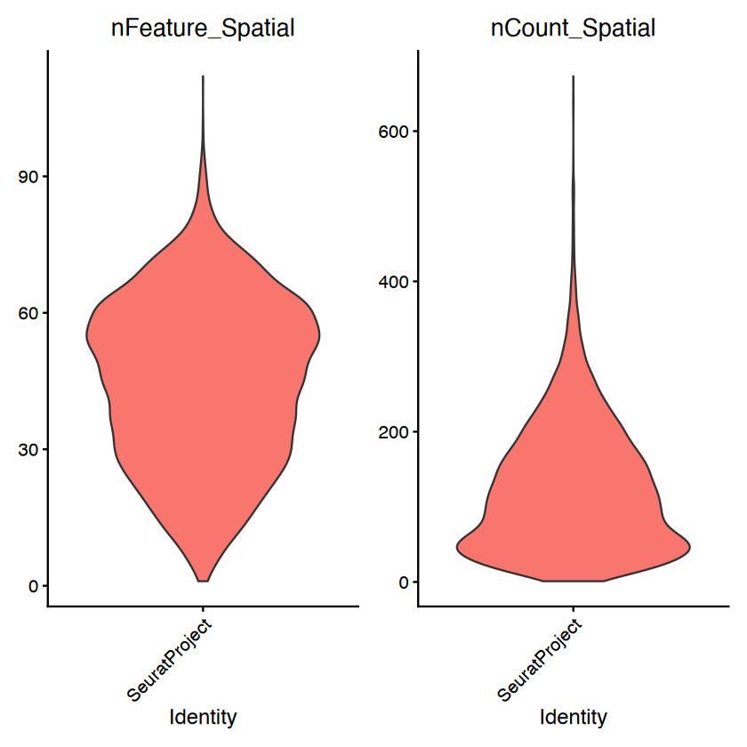
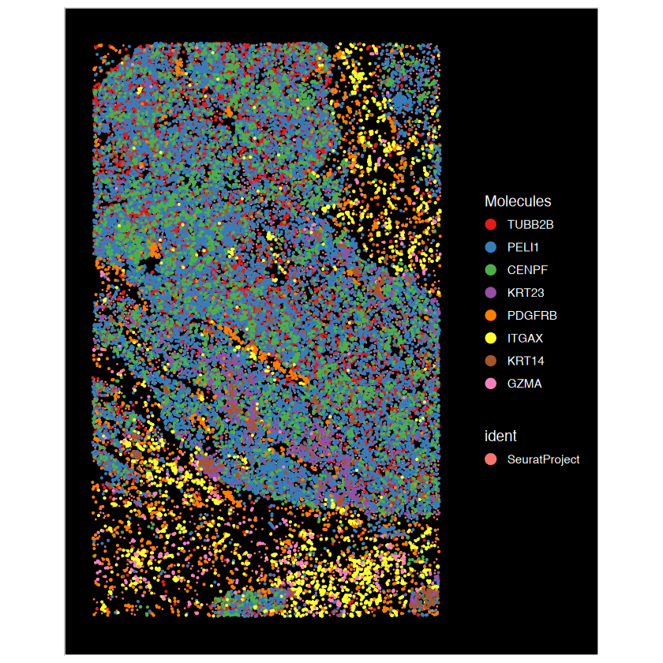
xenium.obj <- SCTransform(xenium.obj, assay = "Spatial",
conserve.memory = TRUE, vst.flavor="v2")
xenium.obj <- RunPCA(xenium.obj, assay = "SCT", verbose = FALSE)
xenium.obj <- FindNeighbors(xenium.obj,
reduction = "pca",
k.param = 30,
dims = 1:30)
xenium.obj <- RunUMAP(xenium.obj,
reduction = "pca",
n.neighbors = 30L,
min.dist = 0.3,
dims = 1:30)
print("Clustering...")
snn_pcs <- BuildSNNSeurat(xenium.obj[["pca"]]@cell.embeddings[,1:30],
nn.eps = 0)
resolution_list <- c(0.2, 0.4, 0.6, 0.8, 1.0)
ids_cos <- Reduce(cbind, parallel::mclapply(resolution_list, function(res_use) {
Seurat:::RunModularityClustering(SNN = snn_pcs,
modularity = 1,
resolution = res_use,
algorithm = 3,
n.start = 10,
n.iter = 10, random.seed = 0, print.output = FALSE,
temp.file.location = NULL, edge.file.name = NULL)
}, mc.cores = min(16, length(resolution_list))))
ids_cos %<>% data.frame()
colnames(ids_cos) <- sprintf("res_%.2f", resolution_list)
ids_cos$res_0.20 <- as.character(ids_cos$res_0.20)
ids_cos$res_0.40 <- as.character(ids_cos$res_0.40)
ids_cos$res_0.60 <- as.character(ids_cos$res_0.60)
ids_cos$res_0.80 <- as.character(ids_cos$res_0.80)
ids_cos$res_1.00 <- as.character(ids_cos$res_1.00)
rownames(ids_cos) = rownames(xenium.obj@meta.data)
ids_cos <- ids_cos %>%
dplyr::mutate(across(everything(), ~ factor(.x, levels = sort(unique(.x)))))
xenium.obj <- AddMetaData(xenium.obj, ids_cos)
head(xenium.obj@meta.data)
resolution = "0.60"
Idents(xenium.obj) = xenium.obj@meta.data[,paste0("res_",resolution)]
cluster_col = paste0("res_",resolution)
|
|
| [1] "Clustering..."| orig.ident | nCount_Spatial | nFeature_Spatial | nCount_BlankCodeword | nFeature_BlankCodeword | nCount_ControlCodeword | nFeature_ControlCodeword | nCount_ControlProbe | nFeature_ControlProbe | nCount_SCT | nFeature_SCT | res_0.20 | res_0.40 | res_0.60 | res_0.80 | res_1.00 | |
|---|---|---|---|---|---|---|---|---|---|---|---|---|---|---|---|---|
| <fct> | <dbl> | <int> | <dbl> | <int> | <dbl> | <int> | <dbl> | <int> | <dbl> | <int> | <fct> | <fct> | <fct> | <fct> | <fct> | |
| aaaiikim-1 | SeuratProject | 66 | 32 | 0 | 0 | 0 | 0 | 0 | 0 | 112 | 33 | 0 | 0 | 0 | 0 | 2 |
| aaaljapa-1 | SeuratProject | 95 | 43 | 0 | 0 | 0 | 0 | 0 | 0 | 107 | 43 | 0 | 0 | 0 | 0 | 2 |
| aabhbgmg-1 | SeuratProject | 215 | 74 | 0 | 0 | 0 | 0 | 0 | 0 | 139 | 69 | 0 | 0 | 0 | 0 | 2 |
| aabpgobe-1 | SeuratProject | 103 | 42 | 0 | 0 | 0 | 0 | 0 | 0 | 111 | 42 | 0 | 0 | 0 | 0 | 2 |
| aacemgol-1 | SeuratProject | 95 | 49 | 0 | 0 | 0 | 0 | 0 | 0 | 106 | 49 | 0 | 2 | 2 | 0 | 0 |
| aacnljfi-1 | SeuratProject | 146 | 56 | 0 | 0 | 0 | 0 | 0 | 0 | 132 | 56 | 0 | 0 | 0 | 0 | 2 |
g = CellDimPlot(
srt = xenium.obj,
group.by = cluster_col,
reduction = "UMAP", theme_use = "theme_blank",
raster = FALSE,
stat_plot_size = 3
)
g 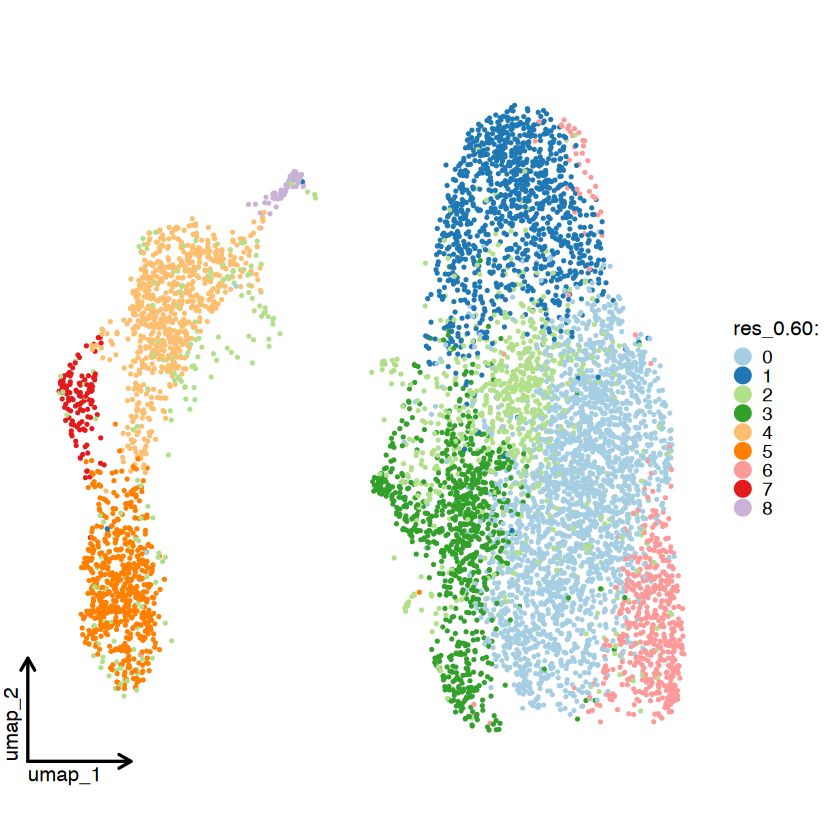
xenium.obj.markers <- FindAllMarkers(xenium.obj, only.pos = TRUE)
xenium.obj.markers %>%
group_by(cluster) %>%
dplyr::slice_max(avg_log2FC, n = 10) %>%
as.data.frame() | p_val | avg_log2FC | pct.1 | pct.2 | p_val_adj | cluster | gene |
|---|---|---|---|---|---|---|
| <dbl> | <dbl> | <dbl> | <dbl> | <dbl> | <fct> | <chr> |
| 4.352502e-144 | 1.1070971 | 0.631 | 0.312 | 1.218701e-141 | 0 | TUBB2B |
| 2.107105e-198 | 1.0848830 | 0.844 | 0.560 | 5.899895e-196 | 0 | CCND1 |
| 7.158840e-12 | 1.0142743 | 0.063 | 0.029 | 2.004475e-09 | 0 | SERHL2 |
| 1.120600e-69 | 0.9176133 | 0.440 | 0.236 | 3.137681e-67 | 0 | TRAF4 |
| 1.399719e-34 | 0.8642718 | 0.254 | 0.137 | 3.919212e-32 | 0 | MYBPC1 |
| 1.514970e-30 | 0.8518701 | 0.227 | 0.122 | 4.241917e-28 | 0 | PTRHD1 |
| 2.436247e-80 | 0.8189955 | 0.584 | 0.349 | 6.821490e-78 | 0 | SLC5A6 |
| 3.880890e-109 | 0.7992065 | 0.784 | 0.553 | 1.086649e-106 | 0 | SEC11C |
| 8.794545e-198 | 0.7828638 | 0.959 | 0.823 | 2.462473e-195 | 0 | TOMM7 |
| 4.888822e-11 | 0.7782080 | 0.107 | 0.063 | 1.368870e-08 | 0 | DMKN |
| 0.000000e+00 | 3.0921346 | 0.963 | 0.295 | 0.000000e+00 | 1 | TOP2A |
| 0.000000e+00 | 2.7563930 | 0.738 | 0.177 | 0.000000e+00 | 1 | CENPF |
| 0.000000e+00 | 2.7361385 | 0.895 | 0.267 | 0.000000e+00 | 1 | MKI67 |
| 4.390233e-182 | 2.1711490 | 0.484 | 0.127 | 1.229265e-179 | 1 | RTKN2 |
| 1.016200e-139 | 1.9993007 | 0.423 | 0.120 | 2.845361e-137 | 1 | PCLAF |
| 1.413482e-49 | 0.8819110 | 0.602 | 0.385 | 3.957749e-47 | 1 | TUBB2B |
| 1.684906e-11 | 0.6981872 | 0.182 | 0.109 | 4.717737e-09 | 1 | FOXC2 |
| 7.656002e-07 | 0.6572381 | 0.102 | 0.061 | 2.143681e-04 | 1 | TCF7 |
| 4.130524e-35 | 0.6302350 | 0.659 | 0.464 | 1.156547e-32 | 1 | EIF4EBP1 |
| 1.323024e-11 | 0.5794848 | 0.275 | 0.186 | 3.704466e-09 | 1 | ANKRD28 |
| 2.613227e-07 | 0.3012463 | 0.806 | 0.711 | 7.317035e-05 | 2 | PELI1 |
| 4.871823e-03 | 0.1489349 | 0.182 | 0.240 | 1.000000e+00 | 2 | HOOK2 |
| 3.526833e-03 | 0.1391945 | 0.066 | 0.098 | 9.875131e-01 | 2 | C6orf132 |
| 4.772797e-04 | 0.1064460 | 0.205 | 0.281 | 1.336383e-01 | 2 | JUP |
| 4.847743e-218 | 3.5214753 | 0.344 | 0.041 | 1.357368e-215 | 3 | KRT23 |
| 1.256544e-15 | 3.3417568 | 0.033 | 0.006 | 3.518325e-13 | 3 | KRT5 |
| 2.917291e-58 | 2.6703702 | 0.160 | 0.035 | 8.168416e-56 | 3 | KRT14 |
| 1.424424e-14 | 2.4819469 | 0.043 | 0.010 | 3.988388e-12 | 3 | S100A14 |
| 3.007982e-98 | 2.2080897 | 0.299 | 0.072 | 8.422349e-96 | 3 | KLF5 |
| 2.894481e-49 | 2.1529674 | 0.145 | 0.033 | 8.104547e-47 | 3 | MLPH |
| ⋮ | ⋮ | ⋮ | ⋮ | ⋮ | ⋮ | ⋮ |
| 0.000000e+00 | 2.6406493 | 1.000 | 0.531 | 0.000000e+00 | 6 | SERPINA3 |
| 7.221488e-03 | 1.5727292 | 0.011 | 0.004 | 1.000000e+00 | 6 | ADH1B |
| 5.709648e-05 | 1.2444034 | 0.038 | 0.015 | 1.598701e-02 | 6 | SPIB |
| 3.175231e-09 | 0.7713981 | 0.233 | 0.138 | 8.890646e-07 | 6 | DUSP2 |
| 9.700172e-22 | 0.5749230 | 0.690 | 0.478 | 2.716048e-19 | 6 | EIF4EBP1 |
| 5.189238e-22 | 0.5739879 | 0.629 | 0.400 | 1.452987e-19 | 6 | TUBB2B |
| 5.640017e-15 | 0.5603609 | 0.561 | 0.385 | 1.579205e-12 | 6 | SQLE |
| 1.246321e-12 | 0.5421208 | 0.457 | 0.301 | 3.489698e-10 | 6 | CDH1 |
| 1.938110e-15 | 0.5207154 | 0.665 | 0.492 | 5.426709e-13 | 6 | BACE2 |
| 3.980188e-16 | 0.5170584 | 0.743 | 0.583 | 1.114453e-13 | 6 | TMEM147 |
| 1.987499e-114 | 6.6590671 | 0.164 | 0.003 | 5.564998e-112 | 7 | PRF1 |
| 1.263723e-229 | 6.2246643 | 0.361 | 0.009 | 3.538425e-227 | 7 | CD247 |
| 0.000000e+00 | 6.2119939 | 0.557 | 0.016 | 0.000000e+00 | 7 | GZMA |
| 0.000000e+00 | 6.1677046 | 0.836 | 0.030 | 0.000000e+00 | 7 | CD3E |
| 0.000000e+00 | 6.1522184 | 0.762 | 0.026 | 0.000000e+00 | 7 | TRAC |
| 8.911910e-64 | 6.1076572 | 0.082 | 0.001 | 2.495335e-61 | 7 | GZMK |
| 2.931856e-279 | 5.8886220 | 0.582 | 0.022 | 8.209198e-277 | 7 | CCL5 |
| 8.855582e-118 | 5.8731920 | 0.205 | 0.006 | 2.479563e-115 | 7 | NKG7 |
| 5.837061e-53 | 5.8313718 | 0.098 | 0.003 | 1.634377e-50 | 7 | GNLY |
| 1.270395e-31 | 5.6507995 | 0.074 | 0.003 | 3.557105e-29 | 7 | LTB |
| 0.000000e+00 | 7.8103947 | 0.826 | 0.008 | 0.000000e+00 | 8 | CLEC14A |
| 0.000000e+00 | 7.6710819 | 0.899 | 0.016 | 0.000000e+00 | 8 | VWF |
| 2.212329e-189 | 6.8435615 | 0.275 | 0.003 | 6.194522e-187 | 8 | ESM1 |
| 0.000000e+00 | 6.7893135 | 0.652 | 0.011 | 0.000000e+00 | 8 | MMRN2 |
| 0.000000e+00 | 6.7891992 | 0.696 | 0.012 | 0.000000e+00 | 8 | KDR |
| 2.349485e-116 | 6.6280555 | 0.174 | 0.002 | 6.578557e-114 | 8 | SOX18 |
| 6.277482e-125 | 6.2772147 | 0.232 | 0.004 | 1.757695e-122 | 8 | NOSTRIN |
| 1.132348e-201 | 6.2624514 | 0.391 | 0.007 | 3.170575e-199 | 8 | HOXD9 |
| 3.182380e-221 | 6.2249313 | 0.391 | 0.007 | 8.910665e-219 | 8 | ANGPT2 |
| 2.091169e-295 | 6.2098244 | 0.913 | 0.035 | 5.855274e-293 | 8 | CD93 |
Cluster annotation: 0 Basal-like epithelial cells / Myoepithelial cells 1 Proliferating epithelial cells 2 Basal/myoepithelial tumor cells 3 Unclassified immune-like cells 4 Inflammatory immune cells (e.g. B cells / monocytes) 5 Cancer-associated fibroblasts (CAFs) 6 Macrophages (TAMs) 7 Cytotoxic / Activated T cells 8 Endothelial cells
Clusters are named by marker-gene signatures (the signature with the highest average scaled expression), so the names do not depend on the arbitrary cluster numbering.
table(xenium.obj@meta.data[,cluster_col])
# Annotate clusters with marker signatures rather than fixed cluster numbers,
# so the labels stay correct if clustering changes between package versions.
signatures <- list(
BasalMyo_epithelial_cells = c("MYBPC1", "SERHL2", "CCND1", "TRAF4"),
Proliferating_epithelial_cells = c("TOP2A", "MKI67", "CENPF", "PCLAF"),
BasalMyo_tumor_cells = c("KRT5", "KRT14", "KRT23", "KLF5"),
Luminal_tumor_cells = c("ESR1", "FOXA1", "GATA3", "KRT8", "CEACAM6"),
Cytotoxic_T = c("CD3E", "PRF1", "GZMA", "TRAC", "CD247", "CD8A"),
`B_and_plasma_cells` = c("MS4A1", "CD79A", "MZB1"),
`Tumor-associated_macrophages` = c("CD163", "C1QA", "CD68", "ITGAX", "LYZ"),
`Cancer-associated_fibroblasts`= c("POSTN", "LUM", "PDGFRB", "SFRP4", "FBLN1", "DPT", "MMP2"),
Endothelial_cells = c("VWF", "CLEC14A", "KDR", "MMRN2"),
Mast_cells = c("CPA3", "TPSAB1", "KIT")
)
feats <- intersect(unique(unlist(signatures)), rownames(xenium.obj))
avg <- as.matrix(AverageExpression(xenium.obj, assays = "SCT", features = feats,
group.by = cluster_col, layer = "data")$SCT)
colnames(avg) <- sub("^g", "", colnames(avg))
avg <- t(scale(t(avg))); avg[is.na(avg)] <- 0 # z-score each gene across clusters
sig_score <- sapply(signatures, function(g) colMeans(avg[intersect(g, rownames(avg)), , drop = FALSE]))
best <- setNames(colnames(sig_score)[max.col(sig_score, ties.method = "first")], rownames(sig_score))
round(sig_score, 2)
best
xenium.obj@meta.data$new_cluster <- unname(best[as.character(xenium.obj@meta.data[, cluster_col])])
table(xenium.obj@meta.data$new_cluster)
cluster_col = "new_cluster"
Idents(xenium.obj) = xenium.obj@meta.data$new_cluster
0 1 2 3 4 5 6 7 8
2389 1079 956 854 700 575 529 122 69 | BasalMyo_epithelial_cells | Proliferating_epithelial_cells | BasalMyo_tumor_cells | Luminal_tumor_cells | Cytotoxic_T | B_and_plasma_cells | Tumor-associated_macrophages | Cancer-associated_fibroblasts | Endothelial_cells | Mast_cells | |
|---|---|---|---|---|---|---|---|---|---|---|
| 0 | 1.46 | -0.09 | -0.25 | -0.03 | -0.37 | -0.28 | -0.48 | -0.62 | -0.34 | 0.04 |
| 1 | 0.63 | 2.57 | -0.10 | 0.15 | -0.37 | -0.30 | -0.48 | -0.60 | -0.34 | 0.08 |
| 2 | -0.01 | -0.10 | -0.01 | -0.11 | -0.35 | -0.33 | -0.40 | -0.50 | -0.33 | 0.07 |
| 3 | 0.88 | -0.05 | 2.59 | 0.24 | -0.37 | -0.51 | -0.45 | -0.60 | -0.34 | 0.38 |
| 4 | -0.84 | -0.62 | -0.51 | 0.00 | -0.26 | 1.36 | -0.02 | 2.29 | -0.30 | -0.22 |
| 5 | -0.99 | -0.65 | -0.49 | 0.15 | -0.21 | -0.18 | 2.59 | 0.00 | -0.34 | 0.28 |
| 6 | 0.83 | -0.08 | -0.21 | 0.26 | -0.37 | -0.28 | -0.48 | -0.64 | -0.35 | -0.30 |
| 7 | -1.16 | -0.51 | -0.55 | 0.36 | 2.66 | 1.22 | 0.14 | 0.23 | -0.32 | 0.28 |
| 8 | -0.81 | -0.47 | -0.46 | -1.02 | -0.35 | -0.69 | -0.42 | 0.45 | 2.67 | -0.62 |
- 0
- ‘BasalMyo_epithelial_cells’
- 1
- ‘Proliferating_epithelial_cells’
- 2
- ‘Mast_cells’
- 3
- ‘BasalMyo_tumor_cells’
- 4
- ‘Cancer-associated_fibroblasts’
- 5
- ‘Tumor-associated_macrophages’
- 6
- ‘BasalMyo_epithelial_cells’
- 7
- ‘Cytotoxic_T’
- 8
- ‘Endothelial_cells’
BasalMyo_epithelial_cells BasalMyo_tumor_cells
2918 854
Cancer-associated_fibroblasts Cytotoxic_T
700 122
Endothelial_cells Mast_cells
69 956
Proliferating_epithelial_cells Tumor-associated_macrophages
1079 575
cluster_COLORS = manual_colors
names(cluster_COLORS) = levels(Idents(xenium.obj))
cluster_COLORS = na.omit(cluster_COLORS)
g = CellDimPlot(
srt = xenium.obj,
group.by = cluster_col,
reduction = "UMAP", theme_use = "theme_blank",
raster = FALSE,
stat_plot_size = 1
) &
scale_color_manual(values = cluster_COLORS) &
guides(color = guide_legend(override.aes = list(size=5,
alpha = 1),
title = "cluster",
ncol = 1))
g 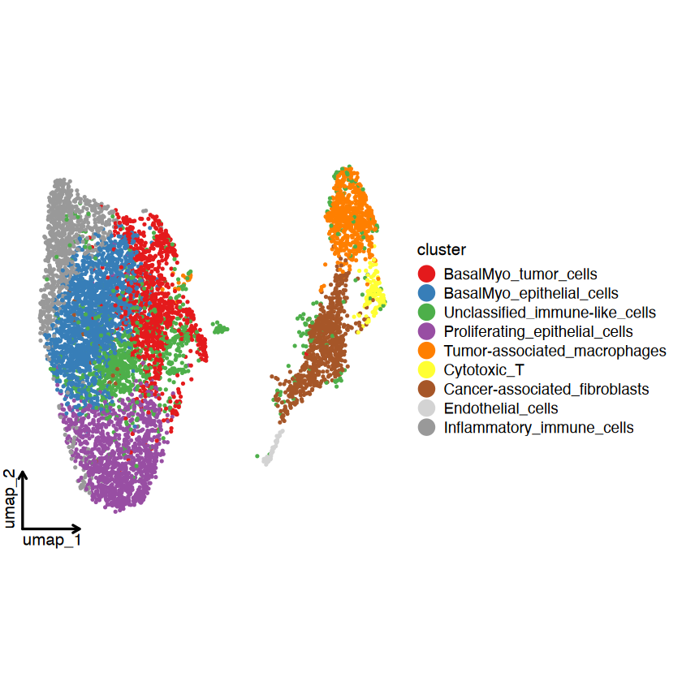
g = ImageDimPlot(xenium.obj,
fov = "fov",
size = 1.2,
group.by = cluster_col,
dark.background = F) &
scale_fill_manual(values = cluster_COLORS) &
guides(fill = guide_legend(override.aes = list(size=5,
alpha = 1),
title = "cluster",
ncol = 1))
g 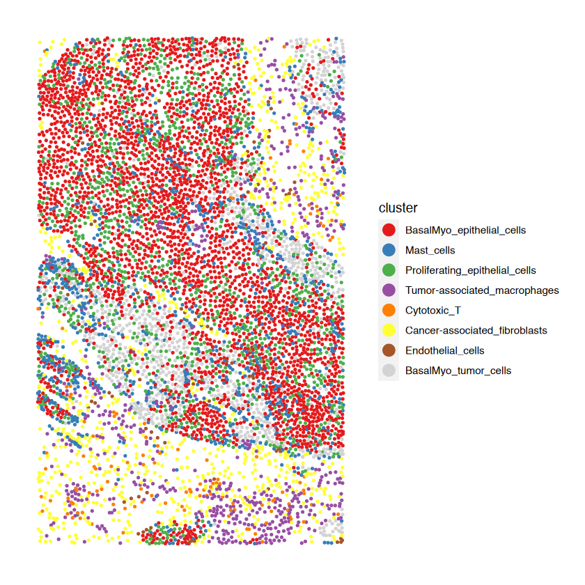
Spatial neighborhood analysis (SNA, cell type level analysis)
n_perm = 100
neighbors.k_ = 30 # Number of neighbors to search
seed = 1234
start_time = Sys.time()
xenium.obj <- nhood_enrichment.Seurat(
xenium.obj,
cluster_key = cluster_col,
neighbors.k = neighbors.k_,
connectivity_key = "nn",
transformation = TRUE,
n_perms = n_perm, seed = seed, n_jobs = 4
)
end_time = Sys.time()
print("Elapsed time:")
difftime(end_time, start_time, units = "secs")[1] "Elapsed time:"Time difference of 3.642823 secs
res <- xenium.obj@misc[[paste0(cluster_col, "_nhood_enrichment")]]
L <- res$log2_oe; P <- res$padj
dimnames(L) <- dimnames(P) <- lapply(dimnames(L), function(v) gsub("^Cluster", "", v))
TITLE <- paste0("Neighbourhood enrichment, log2 O/E\n", data_name, " (* padj < 0.05, ** padj < 0.01)")
sig_mat <- ifelse(P < 0.01, "**", ifelse(P < 0.05, "*", ""))
heatmap <- Heatmap(L,
name = "log2 O/E",
col = colorRamp2(c(-1, 0, 1), c("#0072B5FF", "white", "#BC3C29FF")),
show_row_names = TRUE, show_column_names = TRUE,
cluster_rows = TRUE, cluster_columns = TRUE,
column_title = TITLE,
rect_gp = gpar(col = "black", lwd = 0.3),
cell_fun = function(j, i, x, y, width, height, fill) {
if (sig_mat[i, j] != "") grid.text(sig_mat[i, j], x = x, y = y - 0.2 * height,
gp = gpar(fontsize = 15, col = "black", fontface = "bold"))
})
draw(heatmap, merge_legend = TRUE, heatmap_legend_side = "bottom", annotation_legend_side = "bottom")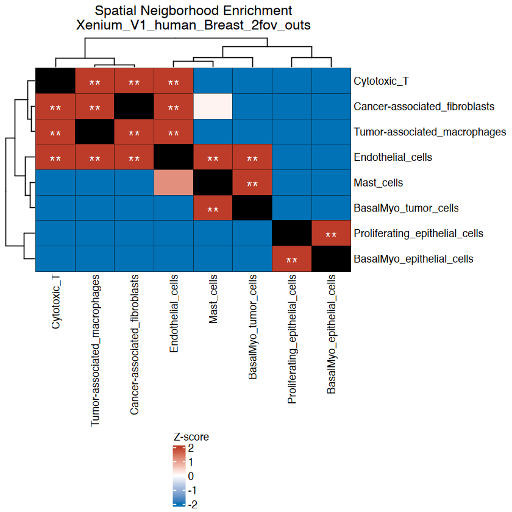
Spatial co-localization score (sCLA, cell-cell level analysis)
xenium.obj[["fov"]]$centroids@coords| x | y |
|---|---|
| 3.986221 | 342.61966 |
| 6.680080 | 353.63556 |
| 10.924507 | 344.44751 |
| 12.469139 | 326.37842 |
| 13.614200 | 336.31012 |
| 16.602362 | 292.55316 |
| 18.095470 | 307.78577 |
| 7.015532 | 306.04666 |
| 13.646845 | 299.77997 |
| 18.019503 | 317.56729 |
| 4.900125 | 323.01886 |
| 9.570869 | 315.95383 |
| 33.660454 | 169.15588 |
| 118.657547 | 87.02421 |
| 127.557861 | 128.69392 |
| 195.570312 | 259.40088 |
| 185.530029 | 144.04372 |
| 146.584167 | 251.46104 |
| 132.430725 | 92.89492 |
| 123.896126 | 77.43526 |
| 185.468582 | 22.79720 |
| 129.620270 | 85.98190 |
| 35.328915 | 293.49655 |
| 31.849537 | 307.49612 |
| 38.008217 | 302.40729 |
| 26.706833 | 299.92395 |
| 52.746372 | 304.86227 |
| 44.550003 | 317.14578 |
| 43.461903 | 308.18326 |
| 45.321529 | 296.22226 |
| ⋮ | ⋮ |
| 386.5923 | 249.85770 |
| 365.6164 | 268.12885 |
| 665.3920 | 538.91150 |
| 626.8651 | 523.63293 |
| 820.7482 | 151.86137 |
| 830.9116 | 132.43082 |
| 803.0009 | 328.66089 |
| 596.5007 | 72.90670 |
| 1066.7518 | 562.16168 |
| 913.9797 | 339.93573 |
| 1050.9253 | 379.66013 |
| 1032.1899 | 431.91525 |
| 889.4853 | 37.63133 |
| 957.7563 | 111.30595 |
| 1199.3645 | 687.77332 |
| 1052.4490 | 153.09167 |
| 1000.3040 | 116.55745 |
| 1097.8085 | 355.41992 |
| 1139.2590 | 105.91132 |
| 824.4532 | 730.56311 |
| 851.0555 | 730.78180 |
| 827.7892 | 628.86633 |
| 703.7122 | 584.78668 |
| 699.8170 | 591.30750 |
| 623.7773 | 613.40106 |
| 736.5967 | 400.61972 |
| 748.6306 | 400.94659 |
| 780.6490 | 621.38281 |
| 775.7633 | 745.26538 |
| 717.4011 | 406.35110 |
cluster_x <- "Cytotoxic_T"
cluster_y <- "Cancer-associated_fibroblasts"
table(Idents(xenium.obj))
radius_ = 30 # Radius to search for neighbors (µm, cell_type_2) around anchor cells (cell_type_1)
start_time = Sys.time()
cooccur_local_df <- cooccur_local.Seurat(
xenium.obj,
cluster_key = cluster_col,
sample_key = "fov",
cluster_x = cluster_x,
cluster_y = cluster_y,
connectivity_key = "nn",
neighbors.k = neighbors.k_,
radius = radius_,
maxnsteps = 15
)
end_time = Sys.time()
print("Elapsed time:")
difftime(end_time, start_time, units = "secs")
summary(cooccur_local_df)
BasalMyo_epithelial_cells Mast_cells
2918 956
Proliferating_epithelial_cells Tumor-associated_macrophages
1079 575
Cytotoxic_T Cancer-associated_fibroblasts
122 700
Endothelial_cells BasalMyo_tumor_cells
69 854 [1] "Elapsed time:"Time difference of 2.079798 secs cooccur_local_Cytotoxic_T_Cancer-associated_fibroblasts
Min. :0.0000000
1st Qu.:0.0000000
Median :0.0000773
Mean :0.1106833
3rd Qu.:0.0646834
Max. :1.1785277
xenium.obj = AddMetaData(xenium.obj, cooccur_local_df)
g = ImageFeaturePlot(xenium.obj,
features = paste0("cooccur_local_",cluster_x,"_",cluster_y),
#dark.background = F,
cols = c("white", "red"))
g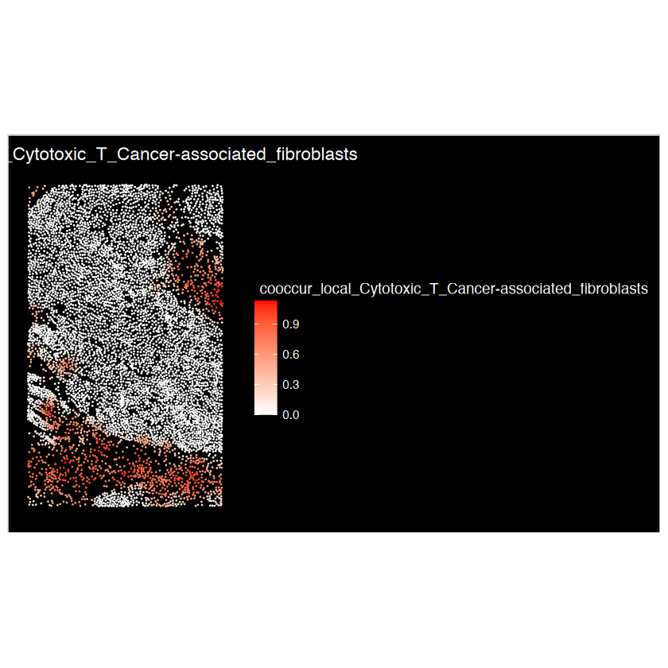
Xenium Mouse Brain
Preprocessing & Cell annotation
path <- paste0(data_dir, "/Xenium_V1_FF_Mouse_Brain_Coronal_Subset_CTX_HP_outs/")
data_name = stringr::str_split(path, "/")[[1]][length(stringr::str_split(path, "/")[[1]])-1]
xenium.obj <- LoadXenium(path, fov = "fov")
# remove cells with 0 counts
xenium.obj <- subset(xenium.obj, subset = nCount_Xenium > 0)
VlnPlot(xenium.obj, features = c("nFeature_Xenium", "nCount_Xenium"), ncol = 2, pt.size = 0)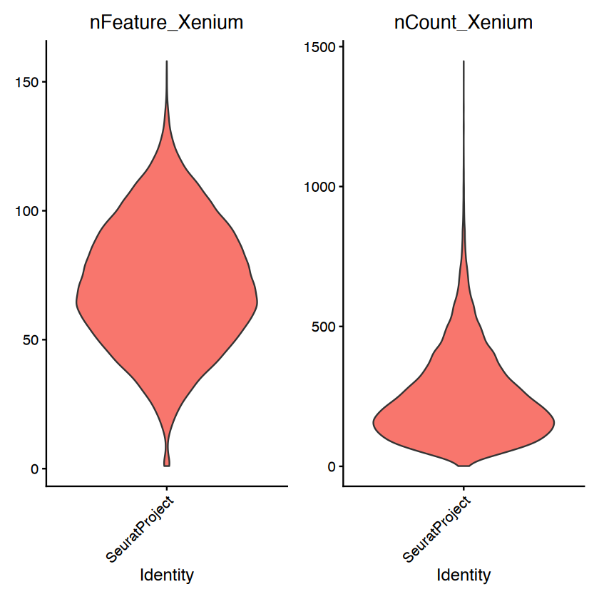
ImageDimPlot(xenium.obj,
fov = "fov",
size = 0.5,
molecules = c("Gad1", "Sst", "Pvalb", "Gfap"), nmols = 20000)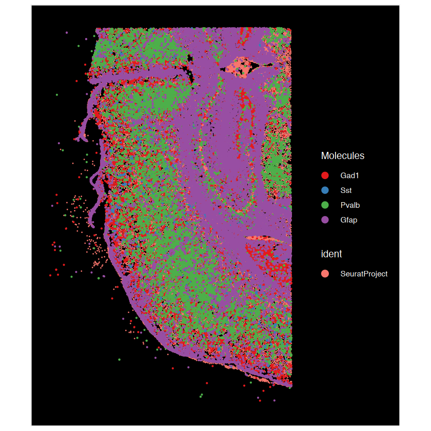
xenium.obj <- SCTransform(xenium.obj, assay = "Xenium")
xenium.obj <- RunPCA(xenium.obj, npcs = 30, features = rownames(xenium.obj))
xenium.obj <- RunUMAP(xenium.obj, dims = 1:30)
xenium.obj <- FindNeighbors(xenium.obj, reduction = "pca", dims = 1:30)
xenium.obj <- FindClusters(xenium.obj, resolution = 0.3)Modularity Optimizer version 1.3.0 by Ludo Waltman and Nees Jan van Eck
Number of nodes: 36553
Number of edges: 1340944
Running Louvain algorithm...
Maximum modularity in 10 random starts: 0.9585
Number of communities: 27
Elapsed time: 7 seconds
cluster_col="seurat_clusters"
g = CellDimPlot(
srt = xenium.obj,
group.by = cluster_col,
reduction = "UMAP", theme_use = "theme_blank",
raster = FALSE,
stat_plot_size = 3
)
g 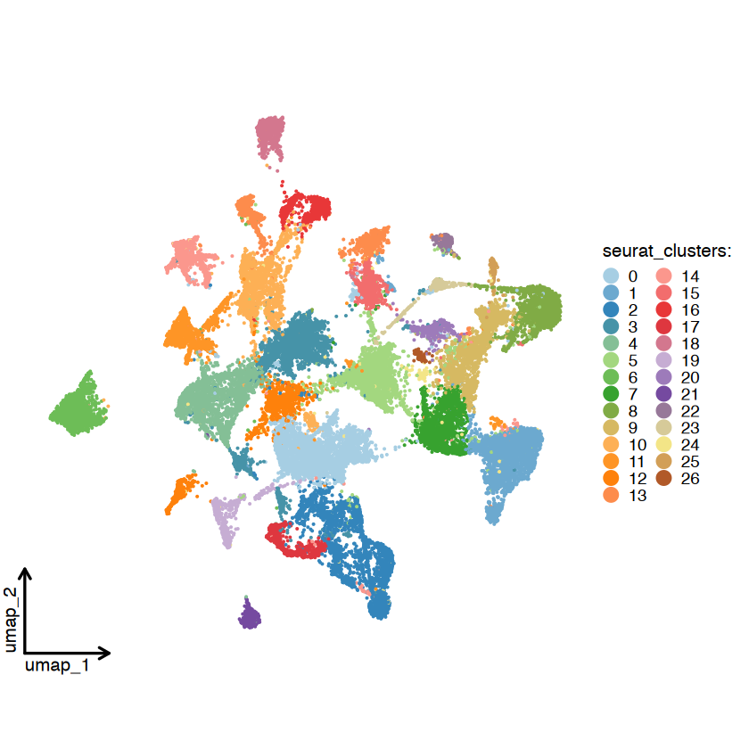
FeaturePlot(xenium.obj, features = c("Cux2", "Bcl11b", "Foxp2", "Gad1", "Sst", "Gfap"))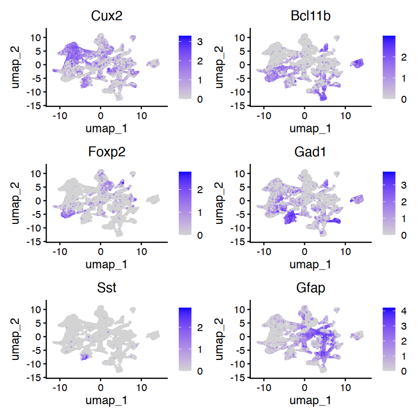
ImageDimPlot(xenium.obj, cols = "polychrome",
size = 0.75)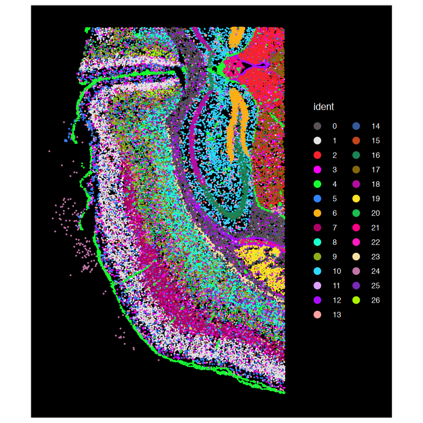
library(spacexr)
query.counts <- GetAssayData(xenium.obj, assay = "Xenium", slot = "counts")
coords <- GetTissueCoordinates(xenium.obj[["fov"]], which = "centroids")
rownames(coords) <- coords$cell
coords$cell <- NULL
query <- SpatialRNA(coords, query.counts, colSums(query.counts))
# allen.corted.ref can be downloaded here:
# https://www.dropbox.com/s/cuowvm4vrf65pvq/allen_cortex.rds?dl=1
allen.cortex.ref <- readRDS(paste0(data_dir, "/allen_cortex.rds"))
allen.cortex.ref <- UpdateSeuratObject(allen.cortex.ref)
Idents(allen.cortex.ref) <- "subclass"
# remove CR cells because there aren't enough of them for annotation
allen.cortex.ref <- subset(allen.cortex.ref, subset = subclass != "CR")
counts <- GetAssayData(allen.cortex.ref, assay = "RNA", slot = "counts")
cluster <- as.factor(allen.cortex.ref$subclass)
names(cluster) <- colnames(allen.cortex.ref)
nUMI <- allen.cortex.ref$nCount_RNA
names(nUMI) <- colnames(allen.cortex.ref)
nUMI <- colSums(counts)
levels(cluster) <- gsub("/", "-", levels(cluster))
reference <- Reference(counts, cluster, nUMI)
# run RCTD with many cores
RCTD <- create.RCTD(query, reference, max_cores = 8)
RCTD <- run.RCTD(RCTD, doublet_mode = "doublet")
Astro Endo L2-3 IT L4 L5 IT L5 PT L6 CT
368 94 982 1401 880 544 960
L6 IT L6b Lamp5 Macrophage Meis2 NP Oligo
1872 358 1122 51 45 362 91
Peri Pvalb Serpinf1 SMC Sncg Sst Vip
32 1337 27 55 125 1741 1728
VLMC
67 [1] "gather_results: finished 1000"
[1] "gather_results: finished 2000"
[1] "gather_results: finished 3000"
[1] "gather_results: finished 4000"
[1] "gather_results: finished 5000"
[1] "gather_results: finished 6000"
[1] "gather_results: finished 7000"
[1] "gather_results: finished 8000"
[1] "gather_results: finished 9000"
[1] "gather_results: finished 10000"
[1] "gather_results: finished 11000"
[1] "gather_results: finished 12000"
[1] "gather_results: finished 13000"
[1] "gather_results: finished 14000"
[1] "gather_results: finished 15000"
[1] "gather_results: finished 16000"
[1] "gather_results: finished 17000"
[1] "gather_results: finished 18000"
[1] "gather_results: finished 19000"
[1] "gather_results: finished 20000"
[1] "gather_results: finished 21000"
[1] "gather_results: finished 22000"
[1] "gather_results: finished 23000"
[1] "gather_results: finished 24000"
[1] "gather_results: finished 25000"
[1] "gather_results: finished 26000"
[1] "gather_results: finished 27000"
[1] "gather_results: finished 28000"
[1] "gather_results: finished 29000"
[1] "gather_results: finished 30000"
[1] "gather_results: finished 31000"
annotations.df <- RCTD@results$results_df
annotations <- annotations.df$first_type
names(annotations) <- rownames(annotations.df)
xenium.obj$predicted.celltype <- annotations
keep.cells <- Cells(xenium.obj)[!is.na(xenium.obj$predicted.celltype)]
xenium.obj <- subset(xenium.obj, cells = keep.cells)
cluster_col="predicted.celltype"
Idents(xenium.obj) = xenium.obj@meta.data[,cluster_col]
markers = xenium.obj.markers %>%
group_by(cluster) %>%
dplyr::slice_max(avg_log2FC, n = 1) %>%
as.data.frame() %>%
pull(gene) %>%
unique()
marker_COLORS = manual_colors
names(marker_COLORS) = markers
ImageDimPlot(xenium.obj, fov = "fov", molecules = markers, nmols = 20000) &
scale_color_manual(values = marker_COLORS) 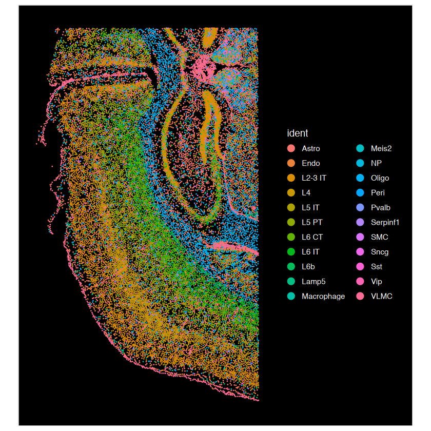
cluster_COLORS = manual_colors
names(cluster_COLORS) = levels(Idents(xenium.obj))
cluster_COLORS = na.omit(cluster_COLORS)
g = CellDimPlot(
srt = xenium.obj,
group.by = cluster_col,
reduction = "UMAP", theme_use = "theme_blank",
raster = FALSE,
stat_plot_size = 1
) &
scale_color_manual(values = cluster_COLORS) &
guides(color = guide_legend(override.aes = list(size=5,
alpha = 1),
title = "cluster",
ncol = 1))
g 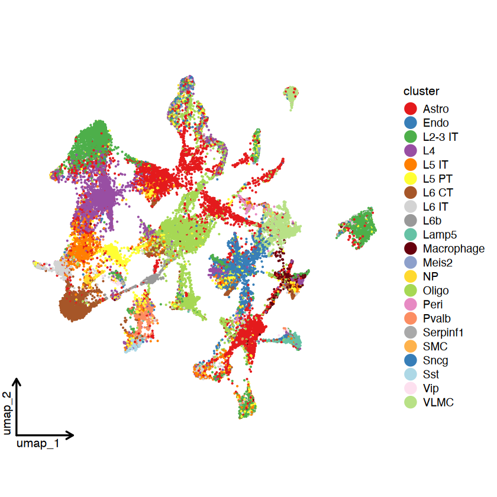
g = ImageDimPlot(xenium.obj,
fov = "fov",
size = 0.5,
group.by = cluster_col) &
scale_fill_manual(values = cluster_COLORS)
g 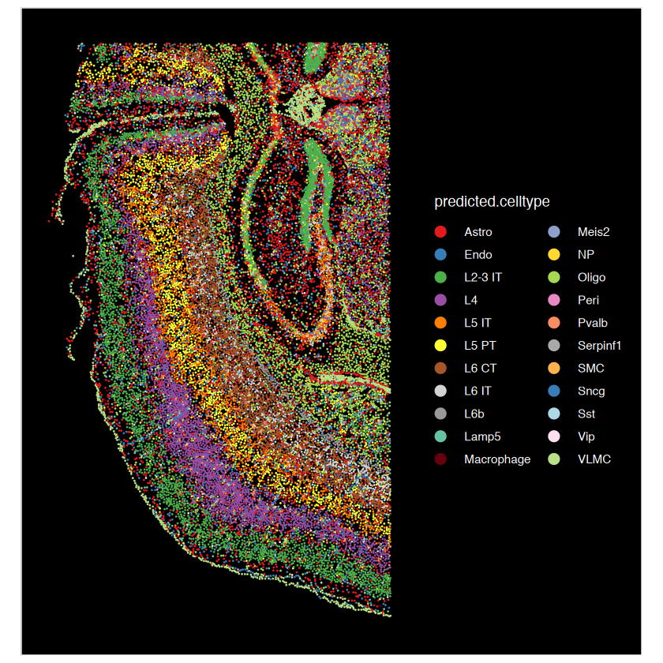
Spatial neighborhood analysis (SNA, cell type level analysis)
n_perm = 100
neighbors.k_ = 30 # Number of neighbors to search
seed = 1234
start_time = Sys.time()
xenium.obj <- nhood_enrichment.Seurat(
xenium.obj,
cluster_key = cluster_col,
neighbors.k = neighbors.k_,
connectivity_key = "nn",
transformation = TRUE,
n_perms = n_perm, seed = seed, n_jobs = 4
)
end_time = Sys.time()
print("Elapsed time:")
difftime(end_time, start_time, units = "secs")[1] "Elapsed time:"Time difference of 7.805199 secs
res <- xenium.obj@misc[[paste0(cluster_col, "_nhood_enrichment")]]
L <- res$log2_oe; P <- res$padj
dimnames(L) <- dimnames(P) <- lapply(dimnames(L), function(v) gsub("^Cluster", "", v))
TITLE <- paste0("Neighbourhood enrichment, log2 O/E\n", data_name, " (* padj < 0.05, ** padj < 0.01)")
sig_mat <- ifelse(P < 0.01, "**", ifelse(P < 0.05, "*", ""))
heatmap <- Heatmap(L,
name = "log2 O/E",
col = colorRamp2(c(-1, 0, 1), c("#0072B5FF", "white", "#BC3C29FF")),
show_row_names = TRUE, show_column_names = TRUE,
cluster_rows = TRUE, cluster_columns = TRUE,
column_title = TITLE,
rect_gp = gpar(col = "black", lwd = 0.3),
cell_fun = function(j, i, x, y, width, height, fill) {
if (sig_mat[i, j] != "") grid.text(sig_mat[i, j], x = x, y = y - 0.2 * height,
gp = gpar(fontsize = 15, col = "black", fontface = "bold"))
})
draw(heatmap, merge_legend = TRUE, heatmap_legend_side = "bottom", annotation_legend_side = "bottom")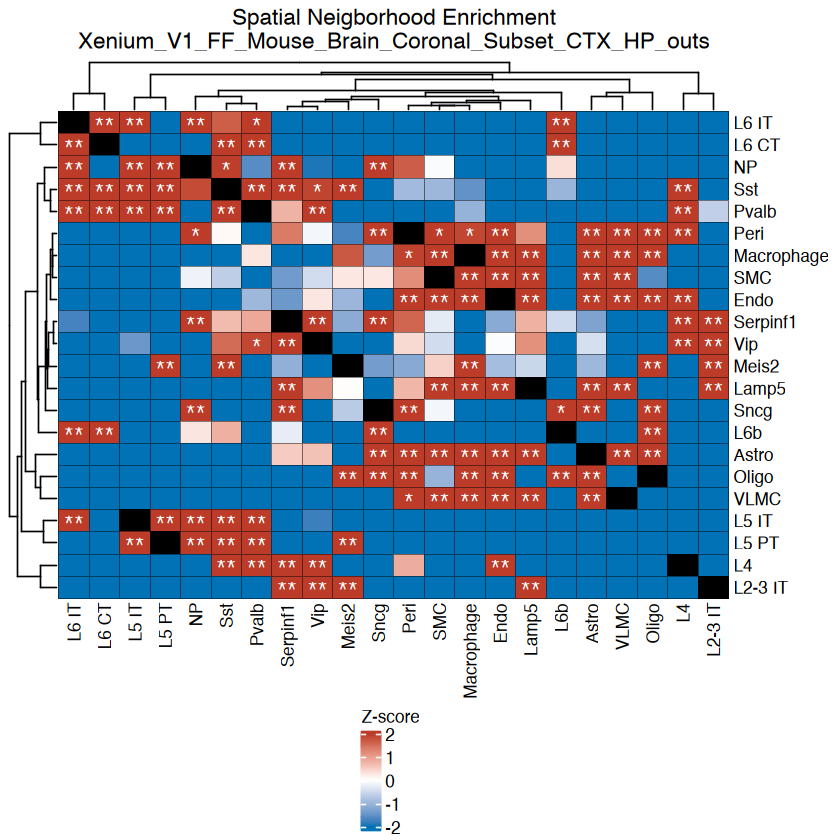
Spatial co-localization score (sCLA, cell-cell level analysis)
cluster_x <- "L6 IT"
cluster_y <- "L6 CT"
table(Idents(xenium.obj))
radius_ = 30 # Radius to search for neighbors (µm, cell_type_2) around anchor cells (cell_type_1)
start_time = Sys.time()
cooccur_local_df <- cooccur_local.Seurat(
xenium.obj,
cluster_key = cluster_col,
sample_key = "fov",
cluster_x = cluster_x,
cluster_y = cluster_y,
connectivity_key = "nn",
neighbors.k = neighbors.k_,
radius = radius_,
maxnsteps = 15
)
end_time = Sys.time()
print("Elapsed time:")
difftime(end_time, start_time, units = "secs")
colnames(cooccur_local_df) = gsub(" ", "_", colnames(cooccur_local_df))
summary(cooccur_local_df)
Astro Endo L2-3 IT L4 L5 IT L5 PT L6 CT
5468 1773 4563 3679 1863 1896 2182
L6 IT L6b Lamp5 Macrophage Meis2 NP Oligo
1114 355 521 448 82 277 3892
Peri Pvalb Serpinf1 SMC Sncg Sst Vip
239 604 56 24 351 223 114
VLMC
1417 [1] "Elapsed time:"Time difference of 7.06738 secs cooccur_local_L6_IT_L6_CT
Min. :0.00000
1st Qu.:0.00000
Median :0.00000
Mean :0.09290
3rd Qu.:0.03948
Max. :1.20254
xenium.obj = AddMetaData(xenium.obj, cooccur_local_df)
g = ImageFeaturePlot(xenium.obj,
features = gsub(" ", "_", paste0("cooccur_local_",cluster_x,"_",cluster_y)),
#dark.background = F,
cols = c("white", "red"))
g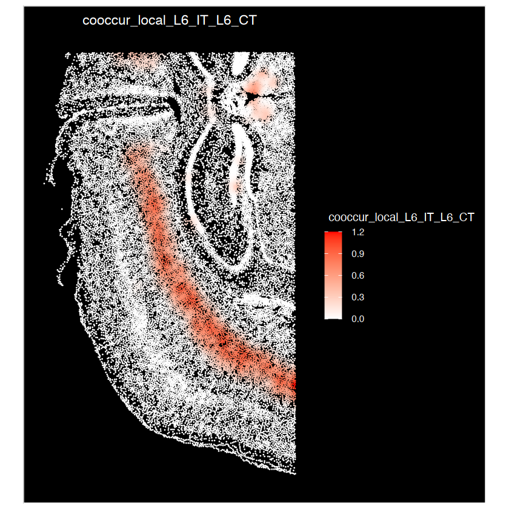
cluster_COLORS_ = cluster_COLORS[cluster_x]
g_x = ImageDimPlot(xenium.obj,
fov = "fov",
size = 0.3,
group.by = cluster_col) &
scale_fill_manual(values = cluster_COLORS_) &
guides(fill = guide_legend(override.aes = list(size=5,
alpha = 1),
title = "cluster",
ncol = 1))
cluster_COLORS_ = cluster_COLORS[cluster_y]
g_y = ImageDimPlot(xenium.obj,
fov = "fov",
size = 0.3,
group.by = cluster_col) &
scale_fill_manual(values = cluster_COLORS_) &
guides(fill = guide_legend(override.aes = list(size=5,
alpha = 1),
title = "cluster",
ncol = 1))
g_x + g_y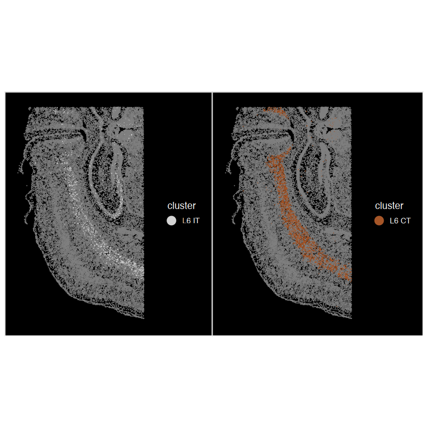
R version 4.3.2 (2023-10-31)
Platform: aarch64-apple-darwin20 (64-bit)
Running under: macOS 26.3.1
Matrix products: default
BLAS: /Library/Frameworks/R.framework/Versions/4.3-arm64/Resources/lib/libRblas.0.dylib
LAPACK: /Library/Frameworks/R.framework/Versions/4.3-arm64/Resources/lib/libRlapack.dylib; LAPACK version 3.11.0
locale:
[1] en_US.UTF-8/en_US.UTF-8/en_US.UTF-8/C/en_US.UTF-8/en_US.UTF-8
time zone: Asia/Tokyo
tzcode source: internal
attached base packages:
[1] grid stats graphics grDevices utils datasets methods
[8] base
other attached packages:
[1] spacexr_2.2.1 cohalu_0.99.3 testthat_3.2.1
[4] ComplexHeatmap_2.18.0 circlize_0.4.15 ggplot2_3.4.4
[7] SCP_0.5.6 dplyr_1.1.4 magrittr_2.0.3
[10] Seurat_5.2.1 SeuratObject_5.0.2 sp_2.1-2
loaded via a namespace (and not attached):
[1] IRanges_2.36.0 R.methodsS3_1.8.2
[3] progress_1.2.3 urlchecker_1.0.1
[5] goftest_1.2-3 Biostrings_2.70.1
[7] HDF5Array_1.30.0 vctrs_0.6.5
[9] spatstat.random_3.3-2 digest_0.6.33
[11] png_0.1-8 shape_1.4.6
[13] slingshot_2.10.0 ggrepel_0.9.4
[15] IRdisplay_1.1 deldir_2.0-2
[17] parallelly_1.36.0 magick_2.8.2
[19] MASS_7.3-60 Signac_1.14.0
[21] reshape2_1.4.4 httpuv_1.6.13
[23] foreach_1.5.2 BiocGenerics_0.48.1
[25] qvalue_2.34.0 withr_2.5.2
[27] ggrastr_1.0.2 ggfun_0.1.3
[29] ellipsis_0.3.2 survival_3.5-7
[31] memoise_2.0.1 proxyC_0.3.4
[33] ggbeeswarm_0.7.2 clusterProfiler_4.10.0
[35] gson_0.1.0 princurve_2.1.6
[37] profvis_0.3.8 tidytree_0.4.6
[39] zoo_1.8-12 GlobalOptions_0.1.2
[41] pbapply_1.7-2 IRkernel_1.3.2
[43] R.oo_1.25.0 prettyunits_1.2.0
[45] KEGGREST_1.42.0 promises_1.2.1
[47] httr_1.4.7 globals_0.16.2
[49] fitdistrplus_1.1-11 rhdf5filters_1.14.1
[51] rhdf5_2.46.1 rstudioapi_0.15.0
[53] miniUI_0.1.1.1 generics_0.1.3
[55] DOSE_3.28.2 base64enc_0.1-3
[57] curl_5.2.0 S4Vectors_0.40.2
[59] repr_1.1.6 zlibbioc_1.48.0
[61] ggraph_2.1.0 polyclip_1.10-6
[63] quadprog_1.5-8 GenomeInfoDbData_1.2.11
[65] SparseArray_1.2.3 interactiveDisplayBase_1.40.0
[67] xtable_1.8-4 stringr_1.5.1
[69] desc_1.4.3 doParallel_1.0.17
[71] evaluate_0.23 S4Arrays_1.2.0
[73] BiocFileCache_2.10.1 hms_1.1.3
[75] GenomicRanges_1.54.1 irlba_2.3.5.1
[77] colorspace_2.1-0 filelock_1.0.3
[79] hdf5r_1.3.8 ROCR_1.0-11
[81] reticulate_1.35.0 spatstat.data_3.1-4
[83] lmtest_0.9-40 glmGamPoi_1.14.0
[85] later_1.3.2 viridis_0.6.4
[87] ggtree_3.10.0 lattice_0.21-9
[89] spatstat.geom_3.3-5 future.apply_1.11.1
[91] scattermore_1.2 XML_3.99-0.16
[93] shadowtext_0.1.2 cowplot_1.1.2
[95] matrixStats_1.2.0 RcppAnnoy_0.0.21
[97] pillar_1.11.0 nlme_3.1-163
[99] iterators_1.0.14 compiler_4.3.2
[101] RSpectra_0.16-1 stringi_1.8.3
[103] tensor_1.5 SummarizedExperiment_1.32.0
[105] devtools_2.4.5 plyr_1.8.9
[107] crayon_1.5.2 abind_1.4-5
[109] gridGraphics_0.5-1 graphlayouts_1.0.2
[111] bit_4.0.5 fastmatch_1.1-4
[113] codetools_0.2-19 GetoptLong_1.0.5
[115] plotly_4.10.3 mime_0.12
[117] splines_4.3.2 Rcpp_1.0.11
[119] fastDummies_1.7.3 sparseMatrixStats_1.14.0
[121] dbplyr_2.4.0 HDO.db_0.99.1
[123] blob_1.2.4 clue_0.3-65
[125] BiocVersion_3.18.1 pbdZMQ_0.3-10
[127] fs_1.6.3 listenv_0.9.0
[129] DelayedMatrixStats_1.24.0 pkgbuild_1.4.3
[131] ggplotify_0.1.2 tibble_3.2.1
[133] Matrix_1.6-5 statmod_1.5.0
[135] tweenr_2.0.2 pkgconfig_2.0.3
[137] tools_4.3.2 cachem_1.0.8
[139] R.cache_0.16.0 RSQLite_2.3.4
[141] viridisLite_0.4.2 DBI_1.2.0
[143] fastmap_1.1.1 scales_1.3.0
[145] usethis_2.2.2 ica_1.0-3
[147] Rsamtools_2.18.0 AnnotationHub_3.10.0
[149] patchwork_1.1.3 BiocManager_1.30.22
[151] dotCall64_1.1-1 RANN_2.6.1
[153] farver_2.1.1 tidygraph_1.3.0
[155] scatterpie_0.2.1 yaml_2.3.8
[157] MatrixGenerics_1.14.0 cli_3.6.2
[159] purrr_1.0.2 stats4_4.3.2
[161] lifecycle_1.0.4 uwot_0.1.16
[163] Biobase_2.62.0 arrow_17.0.0.1
[165] presto_1.0.0 sessioninfo_1.2.2
[167] BiocParallel_1.36.0 gtable_0.3.4
[169] rjson_0.2.23 ggridges_0.5.5
[171] progressr_0.14.0 limma_3.58.1
[173] parallel_4.3.2 ape_5.7-1
[175] jsonlite_2.0.0 RcppHNSW_0.5.0
[177] bitops_1.0-7 bit64_4.0.5
[179] assertthat_0.2.1 brio_1.1.4
[181] Rtsne_0.17 yulab.utils_0.1.2
[183] spatstat.utils_3.1-2 RcppParallel_5.1.7
[185] GOSemSim_2.28.0 spatstat.univar_3.1-2
[187] R.utils_2.12.3 lazyeval_0.2.2
[189] shiny_1.8.0 htmltools_0.5.7
[191] enrichplot_1.22.0 GO.db_3.18.0
[193] sctransform_0.4.1 rappdirs_0.3.3
[195] glue_1.6.2 spam_2.10-0
[197] XVector_0.42.0 RCurl_1.98-1.13
[199] rprojroot_2.0.4 treeio_1.26.0
[201] gridExtra_2.3 igraph_1.6.0
[203] TrajectoryUtils_1.10.0 R6_2.5.1
[205] tidyr_1.3.0 SingleCellExperiment_1.24.0
[207] labeling_0.4.3 RcppRoll_0.3.0
[209] cluster_2.1.4 pkgload_1.3.3
[211] Rhdf5lib_1.24.1 aplot_0.2.2
[213] GenomeInfoDb_1.38.2 vipor_0.4.7
[215] DelayedArray_0.28.0 tidyselect_1.2.0
[217] ggforce_0.4.1 xml2_1.3.6
[219] AnnotationDbi_1.64.1 future_1.33.1
[221] moments_0.14.1 munsell_0.5.0
[223] KernSmooth_2.23-22 data.table_1.16.0
[225] htmlwidgets_1.6.4 fgsea_1.28.0
[227] RColorBrewer_1.1-3 biomaRt_2.58.2
[229] rlang_1.1.2 spatstat.sparse_3.1-0
[231] spatstat.explore_3.3-4 uuid_1.1-1
[233] remotes_2.4.2.1 Cairo_1.6-2
[235] ggnewscale_0.4.9 beeswarm_0.4.0